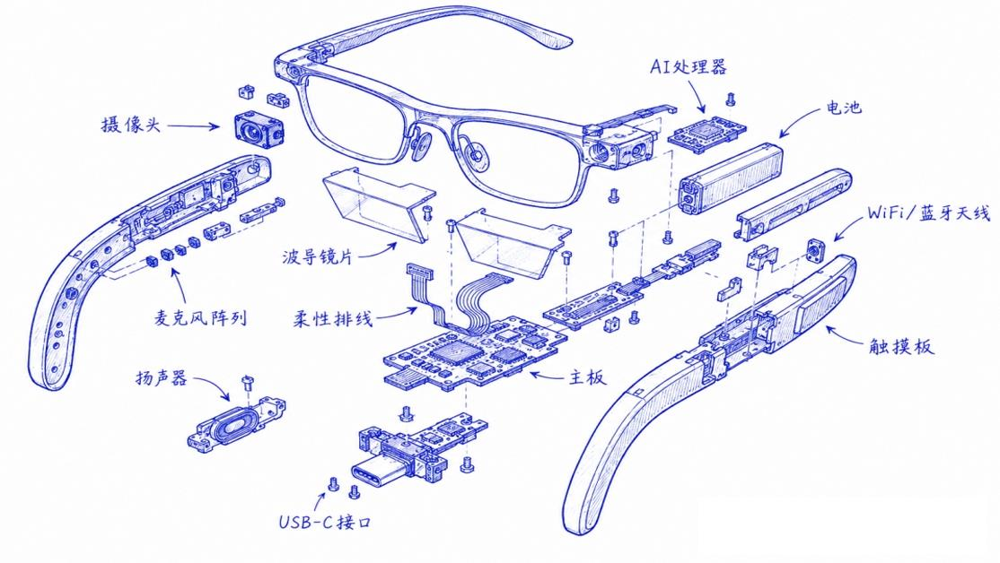
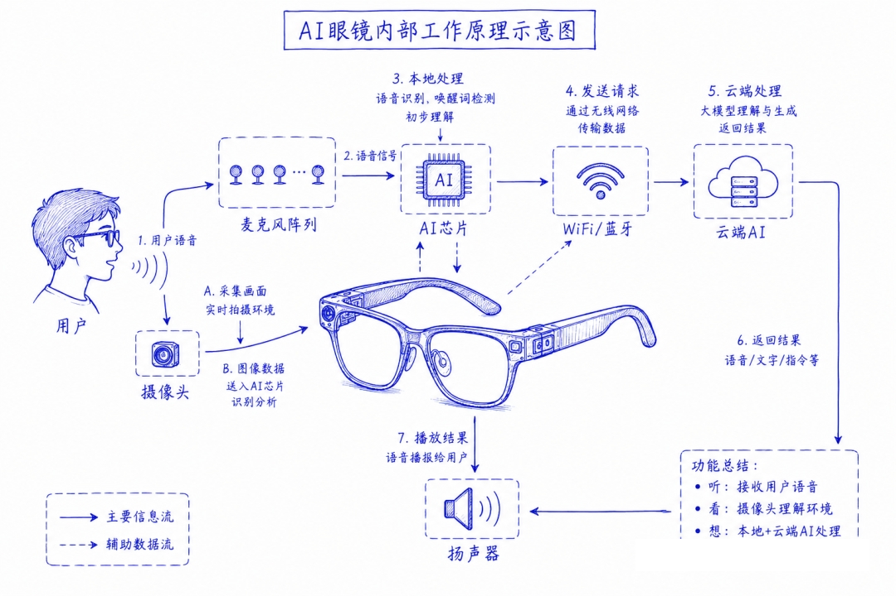

我要秒变
安全生产管理专家
以 AI 眼镜智能硬件为第一视角终端，基于 10200 余份水利专业文档知识库、视觉推理大模型与参考物锚定定量测距分析，测出数值、判出结论、引出条款，让水利安全生产“六项机制”在现场一键闭环。
0
隐患识别准确率
0
巡检效率提升
0
量化判定规则库
0
单台成本

AI Glasses · 49g · 第一视角感知终端
SCROLL
以 AI 眼镜智能硬件为第一视角终端，基于 10200 余份水利专业文档知识库、视觉推理大模型与参考物锚定定量测距分析，测出数值、判出结论、引出条款，让水利安全生产“六项机制”在现场一键闭环。
遵循水利部《“六项机制”实施工作指南》
水利安全Agent自动完成「查找 → 研判 → 预警 → 防范 → 处置 → 责任」闭环，全程免转录
AI 相机以第一视角采集现场，视觉推理大模型经双层架构复核识别工程高频隐患，同步结合定量测量结果综合研判。
从精准识别到合规输出，质量、效率与成本同时获得最优解
以“解决行业真问题”为导向，从 10200 余份专业文档提炼管理经验与量化阈值，历经 700 余次测试打磨
以「视觉推理大模型 + 知识库 + 提示词 + 模板控制」替代传统大样本训练，实现跨场景泛化与大幅降本。
拍照即可测得工程尺寸与不确定度，按规范阈值输出判定结论并引用条款——从“看到隐患”升级为“测出数值、判出结论”。
首次在轻量化 AR 终端实现“六项机制”全链路闭环，识别结果直接成为可归档、可审计的标准化档案。
按“广覆盖、深结构、强关联”原则构建 1300+ 法规标准检索增强知识库，并从中结构化抽取 72 条量化阈值判定规则，支撑大模型、提示词、工作流联动。
真实案例，从语音指令到归档通知，全程自动化。
拍照即可测得工程尺寸并给出「数值 ± 不确定度 σ」，再按规范阈值自动输出判定结论与条款依据——AI 判隐患，从此有数可依、有据可查。
无需外挂测距硬件，也不需人工放置标尺，单张现场照片即可测得工程尺寸，并同步给出测量不确定度 σ，让每一个判定结论都有数可依。
测量失败、超时或数值不可辨时，自动切换备选分析模式并提示人工复核——宁可不下结论，绝不臆断数值，扫描流程全程不断流。
眼镜端轻量采集、动嘴即用；视觉理解与量化分析在云端完成，测量结果与法规规则库自动联动，每条判定结论均附带可追溯的条款依据。
每个测量输出「数值 ± σ」：越限且超出不确定度带判不符合，稳在安全侧判符合，σ 覆盖阈值判临界待人工复核——杜绝“自信的错误判定”，数值不可辨时禁止臆断。
测量值 ± 不确定度 σ 与规范阈值比对；σ 覆盖阈值时，AI 拒绝硬判、转人工复核
测量区间整体越过阈值：构成高处作业，列为隐患，核查安全带佩戴与临边防护。
测量区间稳在阈值安全侧：不构成高处作业，禁止再报“高处作业未系安全带”——阈值型误报精准抑制。
不确定度区间覆盖阈值：AI 不下结论，隐患等级如实记录并提示人工复核——AI 辅助判定，不替代人工。
摄像头与麦克风完成第一视角采集，主控芯片无线上云完成视觉理解与规则检索，判定结果经 Micro LED 光波导实时投射回视野

整机仅 49 克：1200 万像素摄像头、麦克风、扬声器与工作指示灯集成于镜腿；高通 AR1 Gen1 主板（CPU/GPU/NPU）与电池仓居中配重，Micro LED 光波导＋高透镜片将判定结果与「数值±σ」直接投射至视野，USB-C 接口完成充电与数据传输。

看——摄像头、麦克风以第一视角理解环境；想——主控芯片经无线传输上云，本地＋云端 AI 协同完成 VLM 视觉理解、参考物锚定定量测距与 RAG 规则检索；说——判定结论、条款依据与防范措施返回终端，AR 光机回显并语音播报，全程不超过 3 分钟闭环。
纯自然语音指令驱动，第一视角拍照 + Agent分析 + AR 反馈 + 闭环推送，上手零门槛
AR 显示欢迎与能力概览。
提炼最新安全生产资讯。
RAG 检索法规知识库解答。
多项目并行、按项目归档。
责任界定、合规判断深度分析。
AI 拍照 + 定量测距，数值±σ 与三态判定 AR 实时反馈。
测量 → 识别 → 判定 → 研判 → 六类措施 → 法规依据 → 台账 → 通知，一条指令完成全流程，判定结果与条款依据随记录归档。
定量测距判定内核与行业无关，水利工程先行验证，高危行业快速复制
AI 测坑深，3m/5m 危大分级，自动核查专项方案与专家论证手续
2m 阈值定量判定：不足不误报，超限即引用条款核查安全带
外电线路安全距离量测比对，配电箱与接地配置核查
塔吊垂直度量测、吊装警戒距离、与输电线路净距核查
消防器材配置核查、动火作业与易燃物堆放间距检查